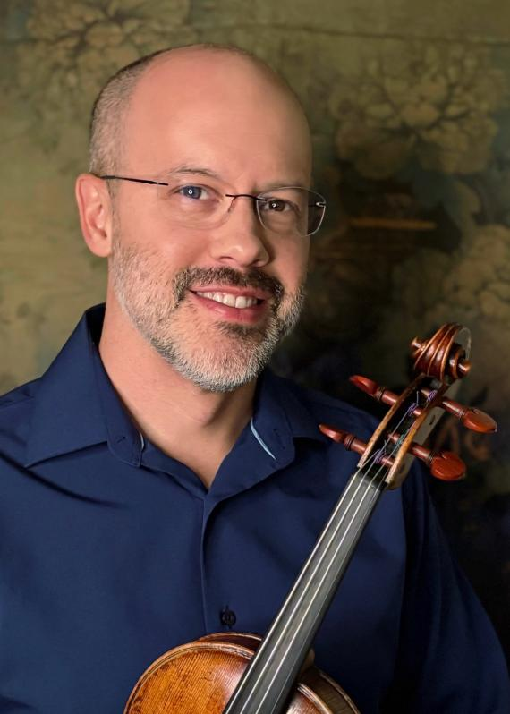
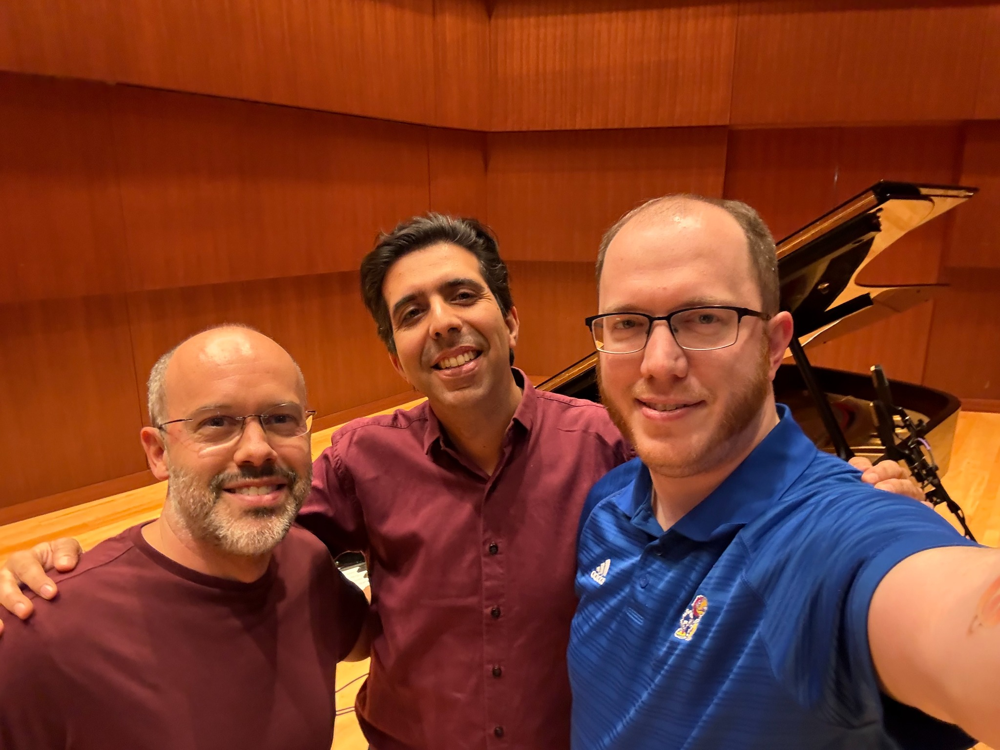
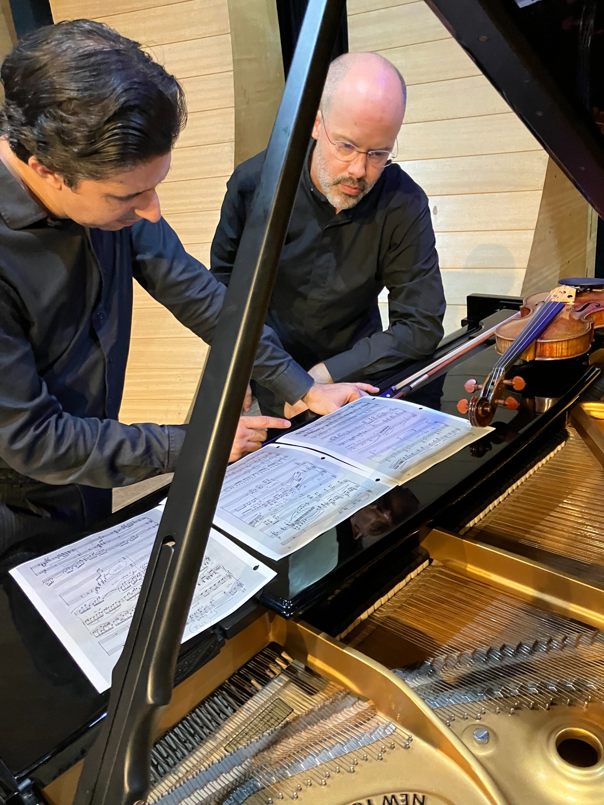
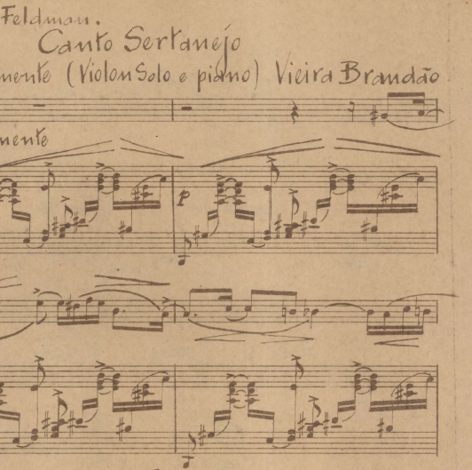
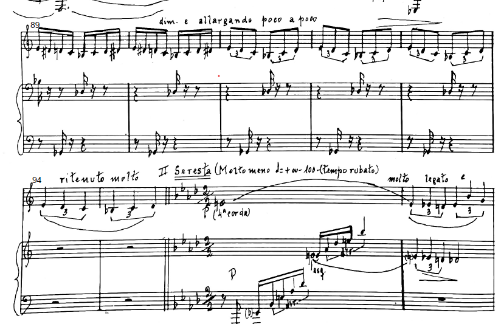
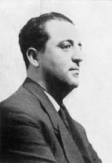
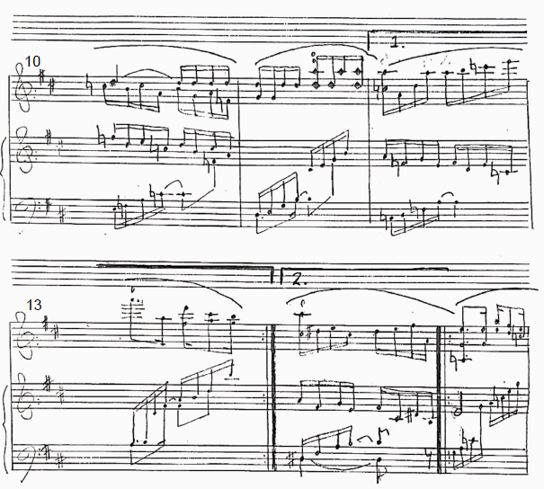
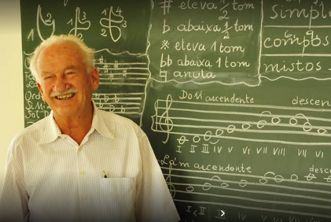

Violin

VIOLIN & PIANO · BKR RECORDS
David Colwell violin
Durval Cesetti piano


Violin
Piano


Within the Brazilian concert repertoire lie works of extraordinary beauty that remain little known: music preserved in manuscripts, scores that have never been published, and pieces that seldom reach the concert stage, even when their composers are widely celebrated. Bringing this music to listeners can involve both the pleasure of discovery and the patient work of recovering a legible score.
Brazilian Gems was born from a desire to bring part of this heritage to light, bringing together works for violin and piano by composers of different generations and placing widely recognized figures—represented here by rarely heard works—alongside composers whose music remains relatively little known. Performed by David Colwell and Durval Cesetti, this recording invites listeners to discover the richness, diversity, and many voices of Brazilian music through the intimate partnership of violin and piano.
Pianist, composer, conductor, and educator José Vieira Brandão occupied a unique position in Brazilian musical history. A close collaborator of Heitor Villa-Lobos, he worked with him from the early 1930s, took part in his music education projects, and became one of the foremost interpreters of Villa-Lobos’s piano music, giving important premieres. Brandão’s own output, however, remains far less familiar, and a significant portion of his music has come down to us in manuscripts that still await wider circulation among performers and audiences.
The indication that opens Canto Sertanejo evokes an entire world: “molengamente.” Few words could sound more Brazilian. It suggests languor, an unhurried movement, perhaps the gentle swaying of a hammock in the heat of the countryside, and immediately establishes the character of a slow, sensuous, deeply expressive song. The title itself refers to the sertão—the vast interior regions of Brazil—and to the voice of its people, evoking a landscape that is both physical and emotional.

Over a syncopated accompaniment in D minor, the violin presents a melody equally rich in syncopations, yet one that calls for a flexible sense of pulse and the freedom of rubato, acquiring a mellifluous, sensuous quality that gives the music a curious feeling of weightlessness. This first idea is contrasted by a second theme that opens radiantly in A major and in which, at certain moments, Brandão superimposes triplets and sixteenth notes, both between violin and piano and between the pianist’s two hands.
After a piano interlude in D minor, the second theme returns transformed, now in A minor, leading to a climax in the violin’s high register, fortissimo, over a whole-tone chord. Gradually, however, the tension dissolves: the opening accompaniment returns, the first melody reappears in abbreviated form, and Canto Sertanejo ends pianissimo, recovering the languid atmosphere with which it began.
Also composed in 1935, Romance survived in a particularly difficult-to-read manuscript, with many passages already considerably faded. For the present recording, Durval Cesetti prepared an edition of the work directly from this material, a process that embodies one of the motivations behind this album: bringing overlooked music to life begins, at times, with deciphering the score itself.
In B minor, Romance begins in an atmosphere of melancholy and considerable harmonic freedom. Throughout the opening measures, chromaticism, suspensions, and elusive resolutions leave the tonality almost suspended, until a clearer cadence in B minor is finally established. Over the piano’s syncopated accompaniment, the violin unfolds an intensely Romantic line, and here again we encounter a recurring feature of Brandão’s writing: the superimposition of different rhythmic divisions, particularly melodic triplets against the piano’s duple subdivision.
A second theme, first presented by the piano and then taken up by the violin, brings a contrasting luminosity. The music gradually intensifies as the two instruments move in opposite directions: the violin rises in octaves as the piano descends, and now it is the piano’s triplets that are set against the violin’s eighth notes. The great climax is followed by a dramatic pause, after which only a few measures are needed to recover the atmosphere of the opening. At the end, violin harmonics hover over a B-minor chord to which the dissonance of a G is added, leaving the work in a state of delicate ambiguity.
Within its modest dimensions, Romance captures something essential about the spirit of Brazilian Gems: immediately expressive, carefully crafted music that deserves a wider place in the repertoire.
Written in 1970, Dança e Seresta was dedicated to the great violinist Henryk Szeryng, with whom Brandão had had artistic contact decades earlier. The very pairing of dance and seresta brings together two worlds deeply connected to Brazilian music: on the one hand, rhythmic and bodily movement; on the other, the tradition of the nocturnal serenade—lyrical, spontaneous, and amorous.

The work follows a clear three-part structure. The opening Dança is vigorous and virtuosic, exploring repeated notes, double stops, and chords in the violin, always propelled by rhythms of a strongly Brazilian character. At moments this momentum subsides, but its energy soon returns, until the violin reaches the extreme upper register and begins a long chromatic descent in which the intervals gradually widen, leading into the Seresta.
The contrast is immediate. The piano at times adopts an arpeggiated texture reminiscent of a guitar accompanying a serenade, while the violin sings a broad, warm, passionate melody to which the piano responds with comments of its own. Gradually the tempo becomes more animated—affrettando—and the expression increasingly intense, once again reaching fortissimo and a broad descending gesture in the violin before the music subsides.
The return of the Dança restores the initial vitality and leads to a brief coda. A dramatic pause heightens the anticipation before the explosive final gesture, bringing the lyricism and rhythmic force of the work into a single, emphatic close.
Written in 1967, the Sonata for Violin and Piano occupies a different place among the works by Vieira Brandão included on this album. In two expansive movements, it explores a more angular musical language, with an expressive range that extends from heroic declarations to mysterious, inward exchanges. The organization of the movements itself departs from a conventional division, since both contain extensive contrasting sections and cadenzas, allowing the form to unfold through an extended dialogue between the two instruments.
The first movement, Allegro moderato – Molto meno – Allegro moderato, opens with an almost heroic energy, marked by harmonies built in fourths and by writing in which violin and piano alternately confront and complement one another. The music then acquires greater freedom: piano trills accompany brief gestures in the violin that continually return in altered forms, until an allargando leads into the Molto meno. Here an entirely different world emerges. In triple meter, the piano presents the melody while violin harmonics discreetly punctuate the second beat of the measure, like distant bird calls, in a passage of almost fantastical atmosphere that may recall the sound world of Villa-Lobos. Small gestures, now in the violin, now in the piano, gently caress the musical line before the contours gradually dissolve and the Allegro moderato returns. The energetic material of the opening reappears, leading to an extended piano cadenza; the violin finally rejoins it to bring the movement to a powerful close.
The second movement, Lento (Recitativo cantabile) – Un poco scherzando, begins with the violin entirely alone, in an extended recitative that opens with a leap of a major seventh. The line proceeds freely until it reaches biting double stops in intervals of a second, and only then does the piano enter, introducing an atmosphere that is mysterious and painful, yet always restrained. The intensity builds to fortissimo, suddenly retreats, and rises again; a new violin cadenza interrupts the discourse and renews the sense of a conversation sustained across moments of solitude.
After another cadential transition, the music becomes more rigorous and angular, with violin writing characterized by fourths, tritones, and fifths. A broad allargando eventually leads to the Un poco scherzando, a section extensive and contrasting enough almost to function as a separate movement. The piano begins alone with a syncopated, sharply articulated figure; after several measures, the violin responds on its own, reinforcing one of the fundamental ideas of the entire Sonata: the constant exchange of roles and arguments between the two instruments. When they finally come together, they recover the restless character of the scherzando.
Near the end, another long pause suspends the movement and prepares the coda. The gestures built in fourths return, the tempo progressively broadens, and, unexpectedly, the final four measures return to the Lento and the recitative-like character of the opening. One further detail lends remarkable unity to this entire journey: the leap of a major seventh with which the violin opens the second movement is also the interval with which, in the final measure, the Sonata comes to an end.

One of Brazil’s most widely recognized twentieth-century composers, Francisco Mignone left an extensive catalogue encompassing orchestral, vocal, and instrumental music. His Variations on a Brazilian Theme, composed in 1935, reveal another dimension of the idea behind this album: even within the output of celebrated composers, works of remarkable quality remain surprisingly little known.
Mignone could hardly have chosen a theme more familiar to Brazilian listeners: Cai, cai, balão, a children’s song that has crossed generations and that virtually every Brazilian child has sung. From this deliberately simple material, Mignone constructs a succession of variations of considerable technical difficulty, although the performers’ greatest challenge may be to ensure that this difficulty never weighs upon the music. The brilliance of the writing grows out of an essentially playful spirit, which must remain audible throughout.
After the presentation of the theme, the opening variations rapidly explore different possibilities of the violin: the melody is transformed into sixteenth notes, moves into a Più mosso in spiccato, and then fragments into increasingly rapid alternations of sixteenth and thirty-second notes. In another variation, violin arpeggios ornamented with lower neighbor notes receive brief interjections from the piano. Chromaticism, dissonances, sharply defined articulations, and carefully exploited piano resonances add piquancy to the writing, which, despite notes foreign to the scale, remains for much of this journey centered around the brightness of C major.
The work then changes perspective. In an Andante in the minor mode, the piano introduces a rhythm with an unmistakably Brazilian flavor, accompanied by arpeggiated chords and a singing bass line, while the melody takes on a melancholy character and later thickens into violin double stops. Soon afterward comes perhaps the most unexpected and poetic moment of the entire work: in A-flat major, a third below the previous tonal center, Mignone writes ancora più lento and delicatissimo. Over repeated piano arpeggios, the violin sings a melody of extraordinary sweetness in its upper register, creating an almost aquatic sonority. It is also one of the most extended variations up to this point, allowing time to expand within a work that had until then been so agile; at the end, the violin remains alone for a few moments.
A brief piano cadenza breaks the spell and restores the playful spirit, now in C minor, preparing a virtuosic violin cadenza. The final variation brings the music back to C major and once again transforms the children’s song into a dance: syncopated chords, dissonances, trills, and arpeggios lead to a conclusion of tremendous energy. Thus, after passing through humor, melancholy, delicacy, and virtuosity, Mignone transforms one of the simplest melodies of Brazilian childhood into concert music without ever depriving it of its essential pleasure of play.
Born in Rio de Janeiro, Guilherme Bernstein is a composer and conductor who teaches orchestral conducting and orchestral performance at the Federal University of the State of Rio de Janeiro (UNIRIO), where he also conducts the university orchestra. As a conductor, he has worked with major Brazilian orchestras as well as ensembles abroad, while his compositional output encompasses orchestral, vocal, and chamber music, opera, and music for theater and film. He is also the author of studies devoted to the music of Villa-Lobos.
O Centauro no Jardim was composed in 1999 as incidental music for the theatrical production of the same name by the Teatro Imediato company, inspired by Moacyr Scliar’s celebrated novel. The production, featuring Bernstein’s music, was presented in Brazil and Germany. In its version for violin and piano, the work takes the form of a suite of variations in which the same musical material passes successively through different cultural and expressive environments.
In Scliar’s novel, Guedali is born a centaur, the son of Russian Jewish immigrants settled in the countryside of Rio Grande do Sul. His fantastic condition becomes a powerful metaphor for questions of identity, difference, immigration, assimilation, and belonging—themes that offer a suggestive way of listening to the succession of musical worlds imagined by Bernstein.
The Tema, in 6/8, is cantabile and meditative, supported by a harmonic language rich in sevenths and ninths and by certain characteristic intervals that will be transformed throughout the variations. The Variação Russa (Russian Variation), significantly marked Tempo selvagem (“wild tempo”), disrupts this equilibrium: the piano alternates bass notes and chords while the violin transforms the intervals of the theme into increasingly vigorous writing, eventually reaching double stops and chords.
The Variação Árabe (Arabian Variation) slows the movement once again. Over alternating piano chords, the violin traces arabesques and ornaments, while the contours of the scales evoke an imagined Arab musical world. The Variação Yiddisch (Yiddish Variation), by contrast, restores dance and humor, with piano interjections between the violin’s phrases and sudden dynamic shifts that give the music a playful character.
Next comes the Variação Triste (Sad Variation), slow and initially restrained, gradually building to a large climax before returning to stillness. In the Variação do Circo (Circus Variation), one of the most theatrical episodes in the suite, the two instruments inhabit different temporal worlds: the piano presents fast, bustling material in Vivace, while the violin responds with slower reminiscences of the theme, and the alternation between Vivace and Lento turns the instrumental dialogue into a miniature scene.
The final transformation is the Variação Brasileira (Brazilian Variation). Over a syncopated accompaniment, the original melody now acquires an unmistakably Brazilian character. In light of Guedali’s journey and Scliar’s reflections on immigration and belonging, it is tempting to hear this final metamorphosis as something more than a simple change of style: after passing through Russian, Arab, Yiddish, sorrowful, and circus-like references, the theme finds a new sense of belonging in the country where the story takes place. Heard in this way, the ending allows the experiences of the preceding variations to coexist within a voice that has become Brazilian.
Written four years later, Prelúdio achieves great delicacy through a remarkable economy of means. The music begins with a brief pizzicato gesture in the violin, which soon takes up the bow to present a simple melody, predominantly in quarter notes, while the piano maintains a continuous motion in sixteenth notes. The serenity of this discourse is colored by harmony rich in sevenths—particularly major sevenths—and other dissonances, lending the piece an intimate and contemplative quality without disturbing its apparent simplicity.
In a brief central passage, the violin falls silent, leaving the piano momentarily alone before returning to resume the dialogue between the two instruments. It is at the end, however, that Bernstein makes a particularly subtle exchange: the quarter-note melody, previously entrusted to the violin, passes to the piano, while the violin assumes the accompanying role. This quiet reversal of roles gives the closing measures their particular tenderness; the music fades without disturbing the serenity from which it emerged.
Born in Ipu, Ceará, Fábio Neves is a composer and pianist whose output encompasses piano music, chamber music, and works for orchestral forces. Durval Cesetti has championed his music for several years, releasing Obras para Piano / Piano Works in 2023, an album devoted entirely to Neves’s piano music.
Romance, Op. 30 is an essentially lyrical piece, built around a beautiful melody in E minor and an atmosphere that is intimate, contemplative, and sweetly sad. Beneath this apparent simplicity, however, lies carefully crafted writing in which Neves displays a particular interest in the independence of individual voices: from the opening measures, the piano accompaniment contains small countermelodies that comment upon the principal line, complete some of its phrases, or at times merge with it.
Throughout the work, the melody itself moves between violin and piano, while the texture occasionally acquires greater vigor, reaching moments of considerable impetus that briefly break through the restraint of the opening. These impulses, however, never prevail completely, and the music ultimately returns to its more inward expression, its desire for expansion tempered by a certain resignation.
The ending preserves this ambiguity through its very abruptness: the lyrical discourse is cut short, leaving its emotional tensions unresolved.
If Romance reveals Fábio Neves’s more introspective side, Forró takes us directly into the rhythmic world of Northeastern Brazil. The work derives from Forró em Maceió, originally written for voice and piano and premiered in Vienna in 2021 by bass-baritone Fellipe Oliveira and pianist Thiago Bertoldi. The vocal version was subsequently recorded by Fellipe Oliveira and Durval Cesetti on the 2022 album Impressões de Alagoas.
Forró is both music and dance, one of the most emblematic cultural expressions of Northeastern Brazil, and in its traditional form—particularly the style known as forró pé-de-serra—it is closely associated with the trio of accordion, zabumba (a large bass drum), and triangle. In his adaptation for violin and piano, Neves recreates something of their energy through syncopations, accents, and virtuosic writing for both performers, in which the momentum of the dance coexists with considerable instrumental sophistication.
The violin writing itself frequently goes beyond the function of a single melodic line, producing brief comments and countermelodies around the theme. In one particularly evocative central passage, double stops evoke the sound of the rabeca, the traditional Brazilian folk fiddle: while the upper voice moves, the lower note remains fixed for several measures before shifting to a new pedal tone, creating the impression of different voices moving within a single instrument.
The energy accumulates throughout the piece, and what began as a dance approaches, in its final moments, a kind of rhythmic ecstasy. Just when an explosive conclusion feels inevitable, Neves brings Forró to a soft, mischievously abrupt stop, leaving the momentum of the dance suspended in the listener’s imagination.
A central figure in twentieth-century Brazilian music, Gilberto Mendes would become known above all for his role in the musical avant-garde, as one of the leading figures of the Música Nova movement and a pioneer in Brazil of experiments with musique concrète, aleatoric music, and music theater. Canção sem palavras, however, was written in 1954, early in his career and well before the more radical experiments that would characterize his later output, revealing a very different side of the composer.

This may be the most delicate piece on the entire album. At a slow tempo, the violin sings almost continuously in double stops—writing of considerable technical difficulty, although none of that effort should be apparent to the listener—over discreet piano gestures and gentle syncopations. There is an immense sweetness to this music, permeated by a serene melancholy and, at certain moments, by something approaching a dance, although even its contrasts remain subtle, like small changes of light within the same atmosphere.
The title is wonderfully apt: the music has the intimacy and expressive directness of a song, while entrusting everything to instrumental sound. Its brevity makes the impression all the more poignant, a fleeting beauty whose resonance outlasts the final notes.

Born in Stuttgart, Germany, Ernst Mahle arrived in Brazil in 1951 and became a Brazilian citizen in 1962, building a career inseparably connected with the city of Piracicaba and with the training of several generations of musicians. In 1953, he was one of the founders of the Piracicaba School of Music, an institution to which he would devote much of his life as a teacher, artistic director, and conductor. His commitment to music education was also reflected in an extraordinarily extensive catalogue that includes works for a remarkable range of instruments and levels of technical development.
This dual identity—European by background and profoundly Brazilian through the experience of an entire lifetime—finds particularly interesting expression in the Sonata for Violin and Piano of 1980. His music brings together the clarity of European formal structures, a modern harmonic language, and Brazilian rhythmic and melodic elements; at the same time, certain passages in this Sonata—particularly in the final movement—suggest an affinity with the world of Béla Bartók, both in their treatment of folk-like materials and in the energy of their asymmetrical meters.
The first movement, Allegro, opens with great energy and a characteristically Brazilian syncopated rhythm that runs through much of the movement and propels an almost heroic theme. The writing clearly follows the outlines of sonata form: a more mysterious second theme leads to a relatively concise development, in which moments of restraint alternate with passages of greater drama, before a clearly defined recapitulation. Mahle writes for the violin with an intimate knowledge of the instrument, exploring its technical resources without sacrificing the naturalness of the musical gesture, and brings the movement to a jubilant conclusion.
The Andante profoundly transforms this atmosphere without entirely abandoning its rhythmic identity: the same syncopated cell from the first movement reappears, now in smaller note values, first in the piano and then in the violin. What previously contributed to the music’s energetic momentum now takes on a sad and solitary expression. It is a more introspective movement, in which the continuity between the first two movements is revealed not through the literal repetition of a theme but through the transformation of the same rhythmic gesture into entirely different expressive states.
In the final Vivo, Mahle once again releases the full energy of the dance. Violin double stops, vigorous accents, and constant changes of meter—moving through 2/4, 5/8, 3/4, 3/8, and 7/8—create an irregular, almost folk-like vitality that may recall Bartók without preventing the music from speaking in a voice entirely its own. Between successive appearances of this dance material come contrasting episodes, including a slower, more ethereal passage, giving the impression, for a few moments, of a dance observed from a distance before its momentum returns.
In the coda, however, there is no longer room for contemplation: a progressive accelerando sets the music into increasingly vertiginous motion, culminating in a sweeping scale that gathers up the energy accumulated throughout the movement. With this impetuous sweep and one final emphatic gesture from the piano, both the Sonata and Brazilian Gems come to an end: a vibrant conclusion to a journey through the lyricism, dance rhythms, intimacy, and instrumental brilliance of Brazilian music.
.jpg)
BKR RECORDS
David Colwell · violin
Durval Cesetti · piano
Listening links will be added when the album is released.